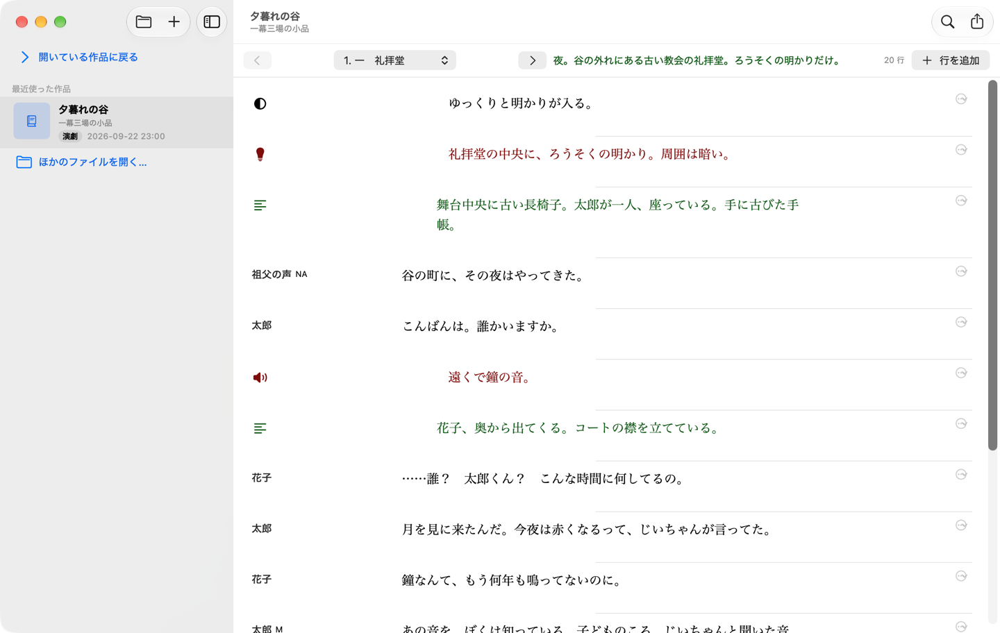
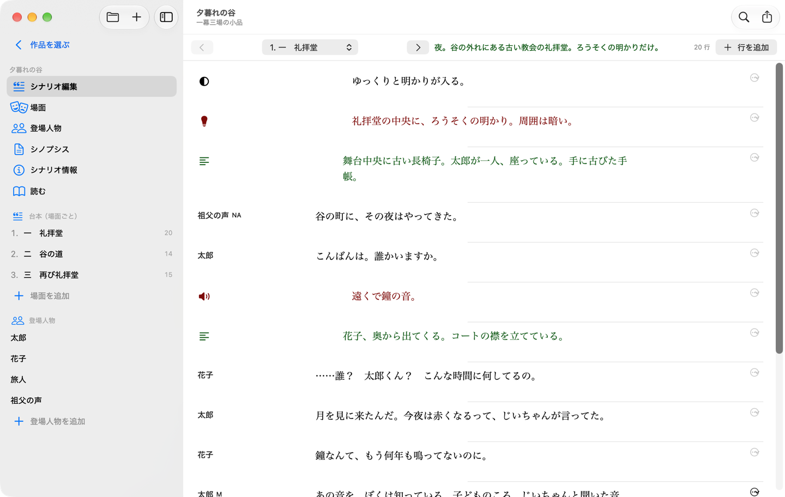
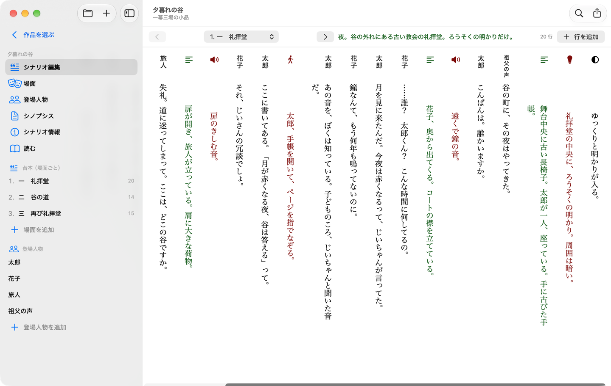
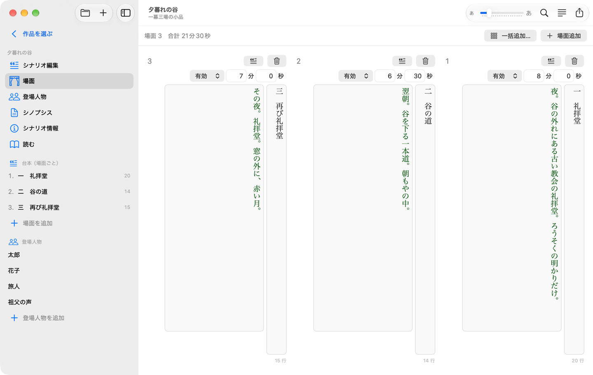
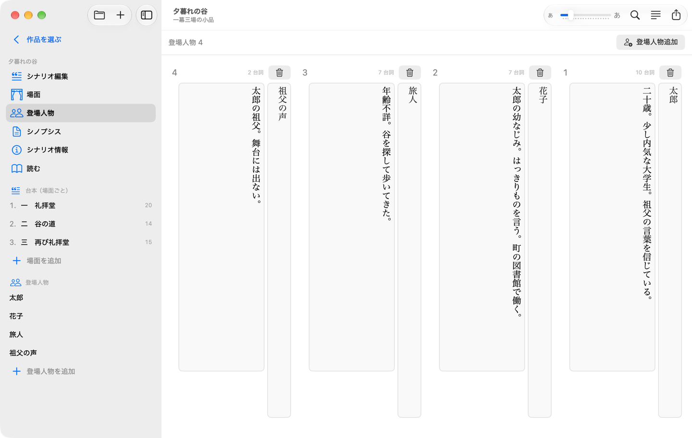
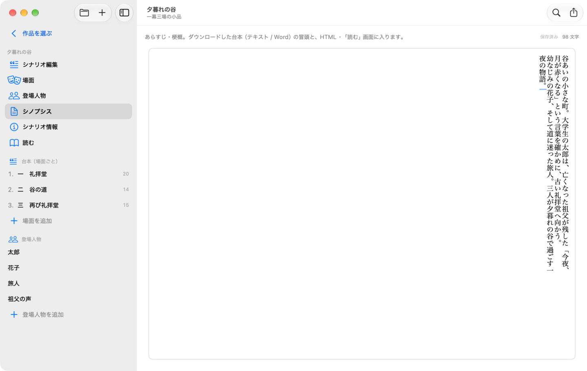
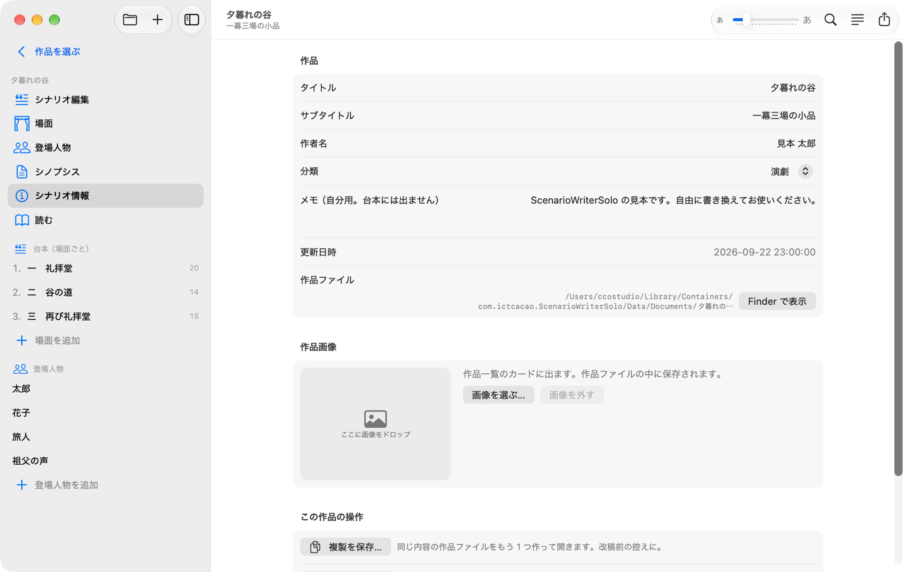
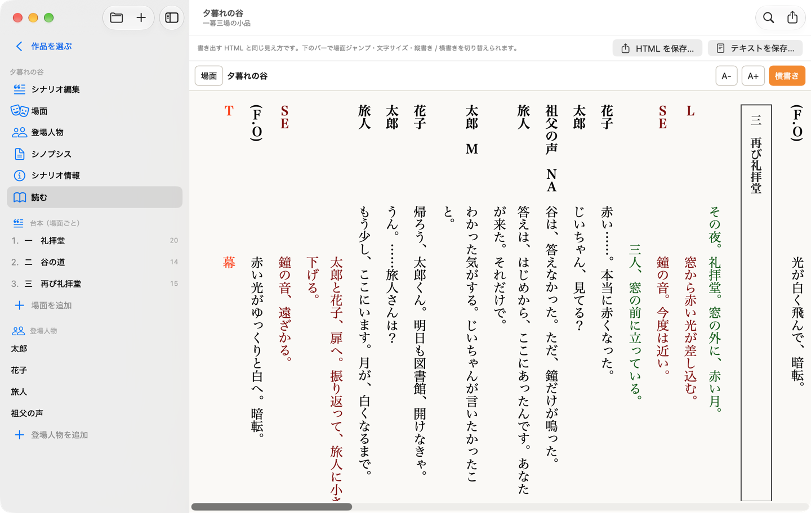
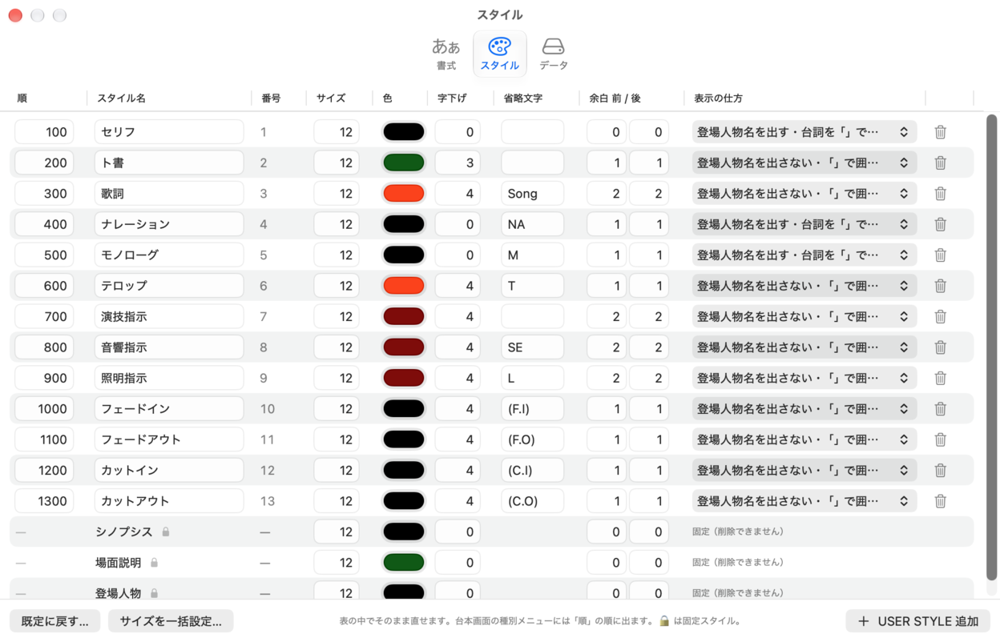
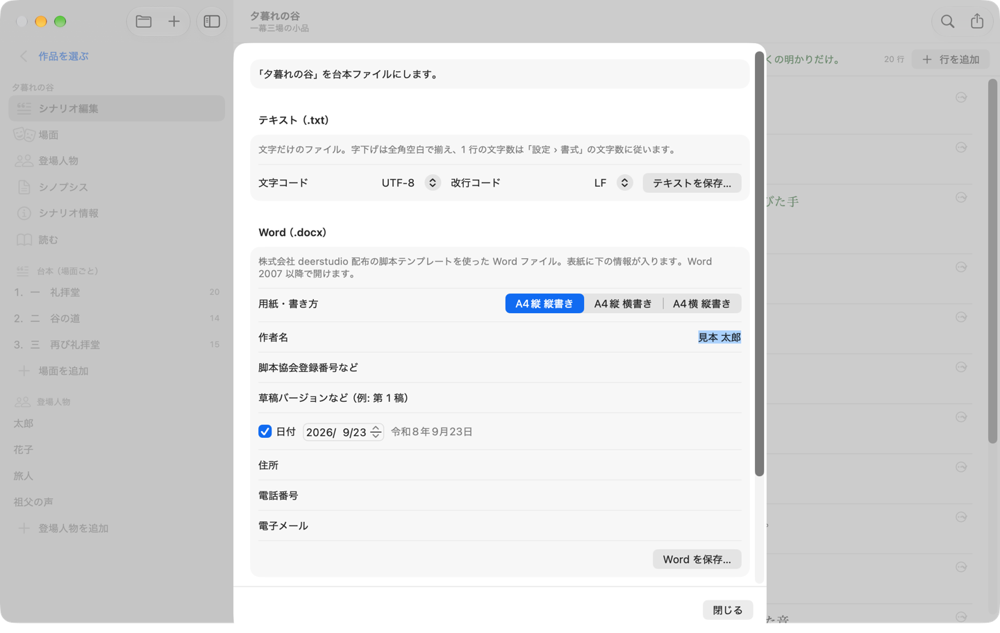

β7 2026 年 9 月
ScenarioWriterSolo は、舞台・映像の脚本を書くためのひとり用エディタです。Web 版 ScenarioWriterCafe と同じ考え方で、PHP も Web サーバもログインも要りません。縦書きでの編集ができ、作品ファイル（タイトル.scwd）は Windows 版と共通です。
ScenarioWriterSolo-β7.dmg を開き、ScenarioWriterSolo.app を Applications へドラッグします。同じ DMG に見本の作品 sample.scwd も入っています。
タイトル.scwd というファイルです。中身は文字（JSON）で、Windows 版 ScenarioWriterSolo と相互に持ち運べます。.scwd（SQLite 形式）も開けて、保存すると新しい形式になります。たくさんあるときは「ファイル › 旧形式（SQLite）の作品ファイルをまとめて変換…」でフォルダごと変換できます（元のファイルは「旧形式」フォルダに残ります）。Windows 版は新しい形式だけを読みます。
1 行が「種別」「登場人物」「本文」の組です。上のバーで場面を選び（⌘[ / ⌘] で前後の場面）、「行を追加」で末尾に行を足します。
| キー | 動き |
|---|---|
| Tab / ⇧Tab | 次の行 / 前の行へ（縦書きでは左 / 右の列へ） |
| ⌘⏎ | この行の下に行を追加（⇧を足すと上に） |
| ⌘↓ / ⌘↑（横書き）、⌘← / ⌘→（縦書き） | 次の行 / 前の行へ |
| ⌘⌥↓ / ⌘⌥↑ | 行を下へ / 上へ動かす |
| ⌘⌫ | 行を削除 |
| ⌘Z / ⇧⌘Z | 元に戻す / やり直す。本文の文字入力はその欄の中で、行の追加・移動・削除・種別の変更・置換・場面や人物の操作は作品全体で効きます |
| Esc | 欄から抜ける |

設定 › 書式 の「編集の書き方向」か、「シナリオ › 縦書きで編集」（⌥⌘T）で切り替えます。縦書きでは行が右から左へ並び、各行の本文は上から下へ書きます。各列の上には人物名が縦書きで出ます。列の幅は本文に合わせて決まり、選択ボックスを開いた列だけ広がります。場面・登場人物・シノプシスの画面も縦書きになります。この設定は作品ファイルには入りません。
開いている作品の本文を検索し、1 件ずつ、または全部を置き換えます。置換は ⌘Z で戻せます。

場面名（柱）、有効 / 無効、上演時間の目安、場面説明を書きます。場面説明は台本の柱の下に出ます。並べ替えは行をドラッグするか右クリックメニューで。「一括追加…」で「第 1 幕 第 1 場」のような場面をまとめて作れます。

登場人物名と人物設定（年齢・性格など）を書きます。人物設定は「読む」画面と Word の人物表に出ます。削除すると、その人物の台詞は名前なしになりますが、台詞そのものは残ります。

あらすじ・梗概です。「読む」画面とテキスト / Word の冒頭に入ります。縦書きのときは、本文と同じ文字数で折り返した縦書きの欄になります。

題名・副題・作者名・分類・メモと、作品画像（一覧に出るサムネイル）です。

台本を通し読みする画面です。Web 版の「劇団員プレビュー」と同じ見た目で、登場人物表・シノプシス・場面ごとの柱と台詞が並びます。上のバーで縦書き / 横書き、文字の大きさを変え、「場面」から場面へ飛べます。人物名欄と本文の幅は 設定 › 書式 の文字数に揃い、半角の英数・カナは全角で表示します。場面番号は出ません。

書式: 編集の書き方向（横書き / 縦書き）、編集画面のフォント（フォント・基準サイズ・行間・文字間隔）、見出し欄の文字数と本文の文字数、台詞を「」で囲むか、あなたの名前（Word の作成者に入ります）。
スタイル: 行の「種別」ごとの見た目です。表の中でそのまま直せます。
| 項目 | 意味 |
|---|---|
| 順 | 種別メニューに並ぶ順 |
| スタイル名 | 種別の名前 |
| 番号 | 台詞の種別番号（変えられません） |
| サイズ | 文字の大きさ。12 が基準で、編集画面・読む画面ともこの比率で大きくなります |
| 色 | 文字の色 |
| 字下げ | 本文の頭を下げる文字数 |
| 省略文字 | 名前を出さない種別で本文の前に付く印（NA / M / SE など） |
| 余白 前 / 後 | 「読む」画面と Word・テキストで行の前後に空ける行数（0〜4） |
| 表示の仕方 | 登場人物名を出すか、台詞を「」で囲むか |
「USER STYLE 追加」で種別を足し、ゴミ箱で消します（その種別を使っていた行は「種別 N」として残ります）。「既定に戻す」で最初の 13 種に戻ります。下の 3 行（シノプシス・場面説明・登場人物）は固定スタイルで、大きさ・色・字下げ・余白だけ変えられます。スタイルと書式は共通の設定で、開いた作品ファイルにも写されます。
データ: 共通設定の場所、Web 版との行き来（後述）。

sw_config フォルダごと（または swdata.sqlite）を選び、次に分割先のフォルダを選ぶと、中の作品が 1 作品 1 ファイルの .scwd になります。作品をまだ開いたことがなければスタイル設定も引き継ぎます。swdata.sqlite として保存します。Web 版の sw_config/ に置くとそのまま開けます。| メニュー | 項目 | ショートカット |
|---|---|---|
| ファイル | 新規シナリオ… / 開く… / 最近使った作品 / 作品を選ぶ / 閉じる / 保存 / 別名で保存… / 複製を保存… / 最後に保存した状態に戻す / ゴミ箱に入れる… / 台本を書き出す… / Web 版用に書き出す… / 取り込む… / 旧形式をまとめて変換… / Finder で表示 | ⌘N / ⌘O / ⇧⌘O / ⌘W / ⌘S / ⇧⌘S / ⌘E |
| 編集 | 検索と置換、この下（上）に行を追加、次（前）の行へ、行を上（下）へ、行を削除 | ⌘F、⌘⏎（⇧⌘⏎）、⌘↓（⌘↑）、⌘⌥↑（⌘⌥↓）、⌘⌫ |
| シナリオ | シナリオ編集〜読む、縦書きで編集、前の場面 / 次の場面 | ⌘1〜⌘6、⌥⌘T、⌘[ / ⌘] |
| ヘルプ | ScenarioWriterSolo について（README） |